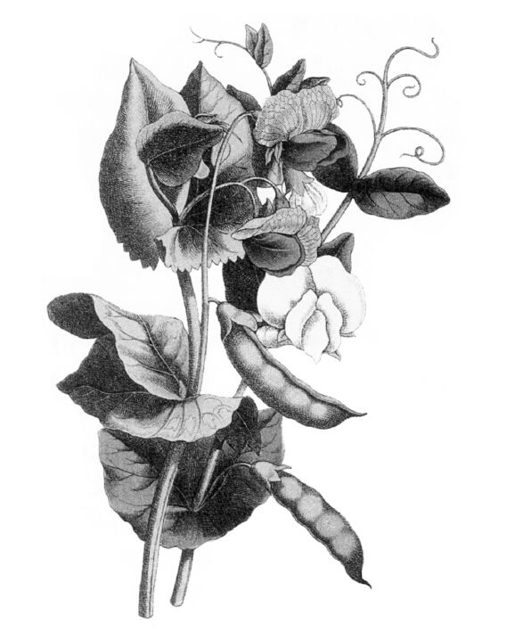

第2章 遗传粒子理论
我冒昧地认为现代理论既然是根据实验遗传学证据逐步推演而来，而证据本身又处处受到严谨的控制，因此，不论基因论同旧理论看来如何相似，它究竟是和旧理论断然不同的。当然，基因论不需，也未尝自认为是最终极的。毫无疑义，它将会经过许多变革，循着新的方向改进。但是目前我们所知道的遗传事实，大多数是可以从现有的理论得到解释的。
孟德尔的手稿及其肖像。孟德尔利用修道院的一小块园地，种植了豌豆、山柳菊、玉米、紫茉莉等植物，并进行了多种植物的杂交试验，其中成绩最突出的是豌豆的杂交试验。
从第1章的证据引出一项结论：生殖质里有遗传单元，在上下各世代中，以各种不同的程度独立分配。更确切些说，就是两个杂交个体的性状在以后世代里独立重现，这件事是能够用生殖质内的独立单元这一理论来解释的。
这些性状为基因论提供了资料，而性状本身又源于所假设的基因；从基因到性状，则属于胚胎发育的全部范围。这里所表述的基因论并没有谈到基因同其最后产物即性状如何联系。这方面知识的贫乏，并不是说它对于遗传学不重要。明确基因对于发育中的个体如何发生影响，毫无疑义地将会使我们对于遗传的认识进一步扩大，对于目前不了解的许多现象也多半会有所阐明。但是事实仍然是，目前不涉及基因如何影响发育过程，也能够解释基因在上下各世代间的分布。
不过以上的论点里有一项基本假设：即发育过程严格遵循因果定律。一个基因发生一种变化，对发育过程也就会产生一定效果，影响到以后该个体某个时期中出现的一种或多种性状。在这种意义上，基因论不必解释基因和性状之间的因果过程的性质，也可以成立。有人没有认清这种关系，于是提出了对基因论一些不必要的批评。
例如，有人说：假设生殖质内有看不见的要素实在并没有说明什么，因为它给各个要素的特性，正是它要提出来说明的特性。但是事实上，所给基因的特性，仅仅是从个体所提供的数据中推论出来的。这种批评之所以产生，像其他类似的批评一样，是由于把遗传学问题和发育问题混为一谈所致。
这理论也受到一个不公正的批评，批评的根据是机体为一个理化机制，而基因论却不能说明其中的机制。但是基因论所仅有的假设：如基因的相对恒定性、基因本身繁殖的性质、在生殖细胞成熟期内基因相互间的离合，没有一项不是符合于理化原理的。的确，这些事件里的理化过程虽然未能明白提出说明，但是至少都关系到生物界中我们所习见的一些现象。
由于不了解孟德尔理论所根据的证据，以及不认识该理论同过去其他关系遗传和发育的粒子假说在方法上的区别，也产生了另一些批评。这一类的粒子假说是相当多的，所以生物学家根据自己的经验，对于不可见的粒子的任何假说都有些怀疑。现在简短地检查以前的几个臆说，对于新旧方法上的区别可能有所阐明（注：在Delage的遗传学和魏斯曼的种质论中对于以前各种学说作了详细的讨论。）。
1863年，斯宾塞（Herbert Spencer）提出了生理单元论，假设每一种动物和植物都是由各该物种所同具的基本单元组成。这些单元据说比蛋白质分子大，结构也比较复杂。斯宾塞理论的理由之一，是机体的任何部分在某些例子里可以再度产生一个整体。卵子和精子便是机体这种整体的断片。至于个体形态上的差异则模糊地认为是由身体不同部分中要素的“极性”或某种晶状排列所造成的。
斯宾塞的理论是纯粹的臆想。它所根据的证据是部分可以产生同样的新整体，由此又推论机体的所有部分都含有可以发育成新整体的一种物质。这虽然有部分的正确性，但不能因此就认为整体必须由一种单元组成。现在我们在解释部分能发育成新整体时也必须假定每一个这样的部分都含有构成一个新整体的诸要素，不过这些要素可以各不相同，它们是身体上分化的根源。只要有一个整组的单元，就有可能具备产生新整体的能力。
1868年，达尔文提出了泛生说，假定有很多不同的、不可见的粒子。这些代表性微粒称为芽体，从身体的各部分不断放出；到达生殖细胞里的粒子和原有的诸遗传单元一道参加了生殖细胞的组成。
泛生说主要是说明获得性如何传递。亲体上的特种变化如果传递到后代，就会需要这一类的理论，身体上的变化如果不传递，也就用不着这类理论了。
1883年，魏斯曼抨击这项传递理论，认为获得性遗传的证据还是不够充分的。许多生物学家，但不是所有的生物学家，承认魏斯曼这种见解。魏斯曼由此发展了他的种质独立论：卵子不仅产生一个新个体，而且也产生了像自己一样的其他卵子，寄居在新个体里面。卵子产生新个体，但个体除保护和滋养他里面的卵子外，对于卵子内的种质并没有别的影响。
魏斯曼从此开始发展了代表性要素的粒子遗传理论。他引用了变异方面的证据，并且引申了他的理论，对胚胎发育作出了纯粹形式的解释。
首先，我们注意到魏斯曼对于他所称为“遗子”的遗传要素的性质有什么看法。在他的晚期著作里，当许多小染色体存在时，他便把小染色体当为遗子；如果只有几条染色体时，他便假定每一条是由几个或许多个遗子组成的。每一个遗子含有个体发育所必需的全部要素。每一个遗子是一个微观宇宙。遗子互不相同，因为它们代表着互不相同的祖代个体或种质。
遗子各种不同的组合，引起了动物中的个体变异。这些组合又是卵子和精子结合的结果。如果遗子在生殖细胞成熟时不是减少一半的话，遗子的数目便会增加到无限大了。
魏斯曼又拟定了一项周密的胚胎发育理论，其所根据的观念是，随着卵子的分裂，遗子也分解成愈来愈小的成分，直到身体上每一种细胞都含有遗子分裂到最后的一种成分——称为定子。在预定为生殖细胞的细胞内，遗子不发生分解，因此才有种质和遗子群的连续性。魏斯曼的理论在胚胎发育方面的应用已经超过了现代遗传理论的范围；现代遗传理论或者漠视发育过程，或者假设一个恰恰和魏斯曼相反的见解，认为在身体上的每一个细胞内存在着整个遗传的复合体。
由此可见，为了说明变异，魏斯曼在他的巧妙的臆想里引证了一些和我们今日所采用的同类的过程，他相信变异是双亲的单元重新联合的结果。在精子和卵子成熟过程中，单元减少了一半。单元各为一个整体，各代表一个祖先阶段。
种质独立和连续概念的建立，大部分归功于魏斯曼。当时，获得性遗传理论把有关遗传的一切问题久已弄得漆黑一团。魏斯曼抨击拉马克学说，在澄清思想上，作出了很大的贡献。魏斯曼的论述把遗传同细胞学的密切关系，提到显著地位，无疑也是重要的。我们现在从染色体的结构和行动方面来解释遗传的这种尝试，究竟受到魏斯曼卓越思想多大的影响是不容易估计到的。
这些臆说以及其他更早的臆说，目前只有历史上的意义，不足以代表现代基因论发展的主要路线。基因论成立的根据在于它所凭借的方法，以及在于它能够预测出特别精确的数字结果。
我冒昧地认为现代理论既然是根据实验遗传学证据逐步推演而来，而证据本身又处处受到严谨的控制，因此，不论基因论同旧理论看来如何相似，它究竟是和旧理论断然不同的。当然，基因论不需，也未尝自认为是最终极的。毫无疑义，它将会经过许多变革，循着新的方向改进。但是目前我们所知道的遗传事实，大多数是可以从现有的理论得到解释的。

豌豆